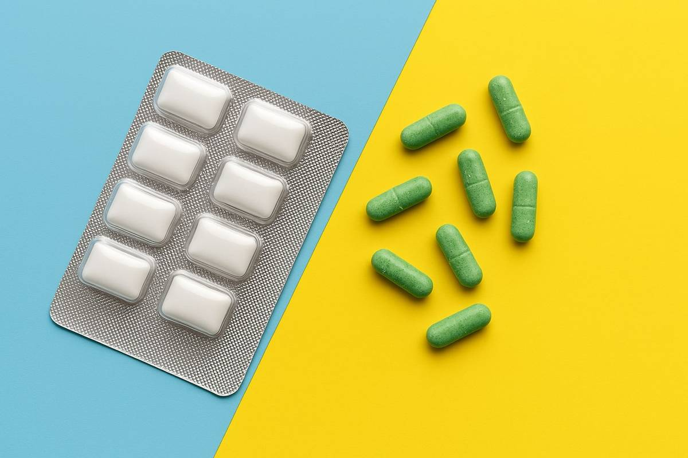

How to Combine Caffeine Gum with Nootropics for Maximum Focus
In today’s fast-paced world, staying focused and mentally sharp is more important than ever. Whether you’re a student, professional, or athlete, the combination of caffeine gum and nootropics offers a powerful way to boost productivity and clarity.
What Are Nootropics?
Nootropics, often called "smart drugs," are compounds that improve brain function. Common nootropics include:
- L-theanine
- Vitamin B6 & B12
- Caffeine
How Do Caffeine and Nootropics Work Together?
Caffeine boosts alertness, while L-theanine promotes calm focus. Together, they create sustained mental clarity without jitters or crashes.
The Benefits of Combining Caffeine Gum with Nootropics
- Enhanced Focus: Clear mental fog and tackle complex tasks.
- Sustained Energy: No crash like energy drinks.
- Improved Productivity: Maintain momentum throughout your day.
Why Choose NeuroGum?
NeuroGum combines caffeine, L-theanine, and B-vitamins for a balanced, portable energy source. It's:
- Sugar-free
- Vegan
- Gluten-free
- Portable and convenient
How to Use NeuroGum for Maximum Focus
- Start Your Day Right: Chew one in the morning.
- Use at Work/Study: Regain clarity when needed.
- Stack with Other Nootropics: Combine with omega-3 or ginkgo biloba.
- Stick to 2–3 per Day: Avoid overuse to prevent jitters.
Real-Life Scenarios
- Students: Stay focused during long study sessions or exams.
- Professionals: Improve clarity during important meetings or deep work.
- Athletes: Use before workouts for mental and physical performance.